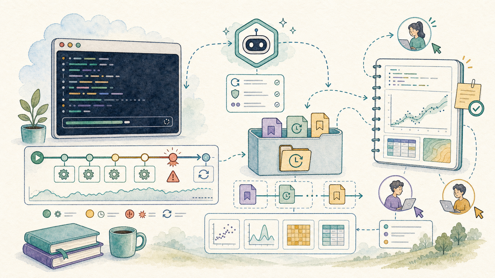
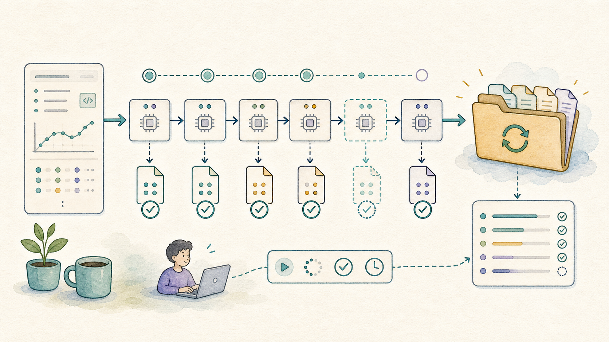
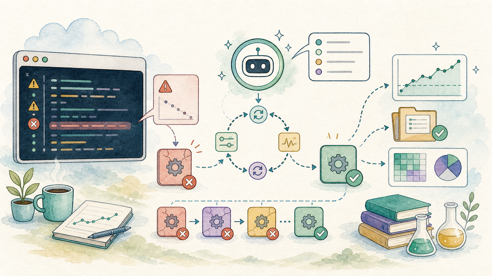
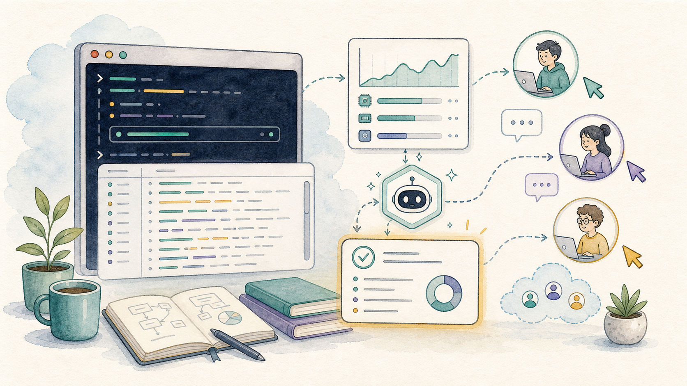
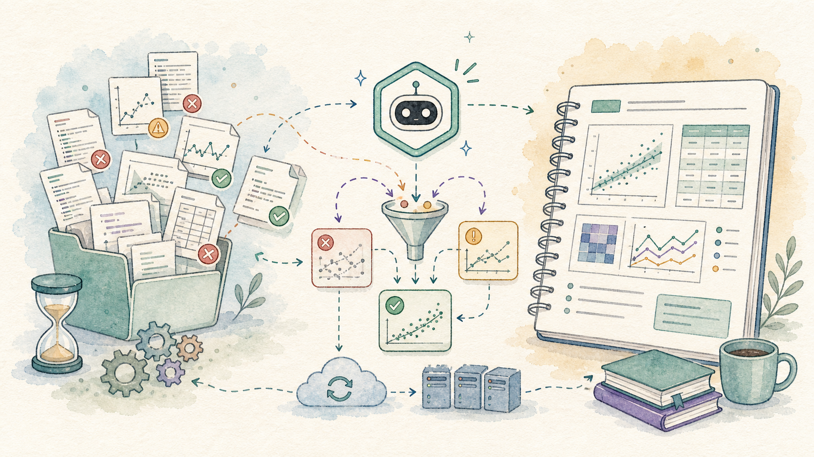

A CoCalc-AI field guide for researchers
Research Runs That Survive
Turn a long-running computation into a managed research loop: checkpoint often, log everything, let Codex recover from failures, and keep the useful output.

Research computations are often messy. A parameter range is too large. One case hangs. A server restarts. A script crashes after producing half the data you actually needed.
The goal is not to make every run perfect. The goal is to design the run so partial output is useful, failures are visible, and Codex can manage the tedious details: restart, inspect logs, skip bad cases, and summarize what was learned.
CoCalc-AI is a good place for this because the terminal, notebooks, files, logs, chat, and agent thread are all part of one realtime collaborative project.
Shape the job so partial results count
A fragile computation writes one giant file at the end. A resilient computation writes small results as it goes.
Ask Codex to turn a script into a chunked run: each input case gets its own output file, its own log entry, and a way to detect whether it already finished.
Refactor this sweep so each parameter pair writes one JSON result. It should skip completed cases, log failures, and be safe to rerun.

Run it where history survives
Use a terminal for the real run. It gives Codex and collaborators a concrete history to inspect: commands, output, working directory, and the current process state.
mkdir -p runs/2026-05-22
python sweep.py \
--start 0 \
--stop 10000 \
--out runs/2026-05-22 \
2>&1 | tee runs/2026-05-22/run.logThe exact command matters less than the habit: every run should have a named output directory and a log that can be read later.
Before pressing enter
- Where will output files go?
- Where will the log go?
- Can completed cases be skipped?
- What is the smallest verification run?
Expect crashes, then route around them
A crash is useful information if it is captured. Codex can read the log, identify the failing input, patch the script, and rerun only the missing or failed cases.
python summarize_run.py runs/2026-05-22
python sweep.py --resume --out runs/2026-05-22For long jobs, the right question is often not “why did this fail?” It is “what finished, what failed, and what should we try next?”

Monitor together without babysitting
CoCalc-AI’s collaborative terminal changes the social shape of a long run. A collaborator can check the live process, inspect the same log, or ask Codex for a status summary without asking you to paste screenshots.
Read the current terminal history and output directory. Summarize progress, failures, estimated remaining cases, and anything that needs a human decision.
This is especially useful after server restarts or disconnects. The project remains the shared source of truth.

Ask Codex to salvage the signal
List completed, missing, failed, and suspicious cases.
Make a table of useful output and the failures that remain.
Generate quick figures from the data that actually exists.
Retry only the narrow slice that could change the conclusion.
Leave a trail for future you
A long run should end with a short written receipt. What command was run? Which commit or script version produced the data? Which cases failed? Which plots or tables are ready to trust?
CoCalc-AI snapshots and backups give you another safety net. Before risky environment changes or major reruns, take a snapshot so the project can return to a known state.
RUN-2026-05-22.md with commands, output paths,
failures, plots, and next steps.

The win is useful evidence
Long-running research computation is rarely tidy. CoCalc-AI helps by keeping the process inspectable: terminal history, logs, notebooks, snapshots, files, chat, and Codex all live in the same collaborative project.
That means Codex can do more than write code. It can help manage the messy middle: restart the run, preserve partial data, summarize the evidence, and leave you with something another researcher can inspect.